Follow the steps below with visuals for each stage. Images: Broma Bakery.
Phase 1: Prep & Dry Ingredients
1. Measure Ingredients
Measure out all your ingredients using a kitchen scale before you begin — egg whites, granulated sugar, almond flour, powdered sugar, and salt for the shells, plus filling ingredients when you get to that step. This keeps the process smooth and accurate.
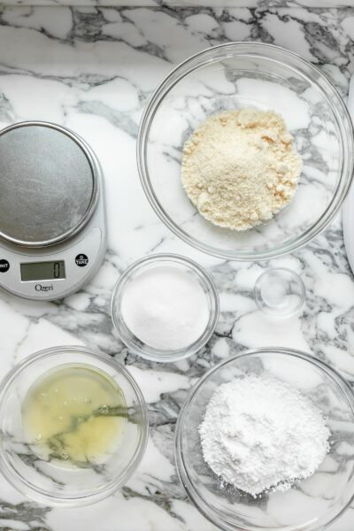
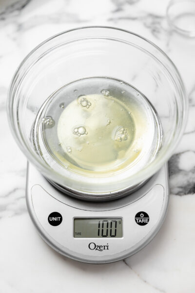
2. Preheat and Line
Preheat your oven to 300°F. Line two large baking sheets with parchment paper.
3. Sift
Sift the almond flour, powdered sugar, and salt together three times for a perfectly smooth shell. Set aside.
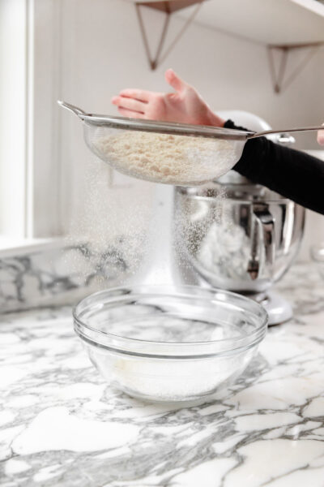
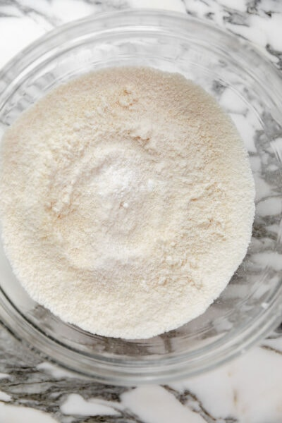
Phase 2: Making the Swiss Meringue
4. Double Boiler Setup
Heat a small pot of water over medium-low heat until it begins to steam.
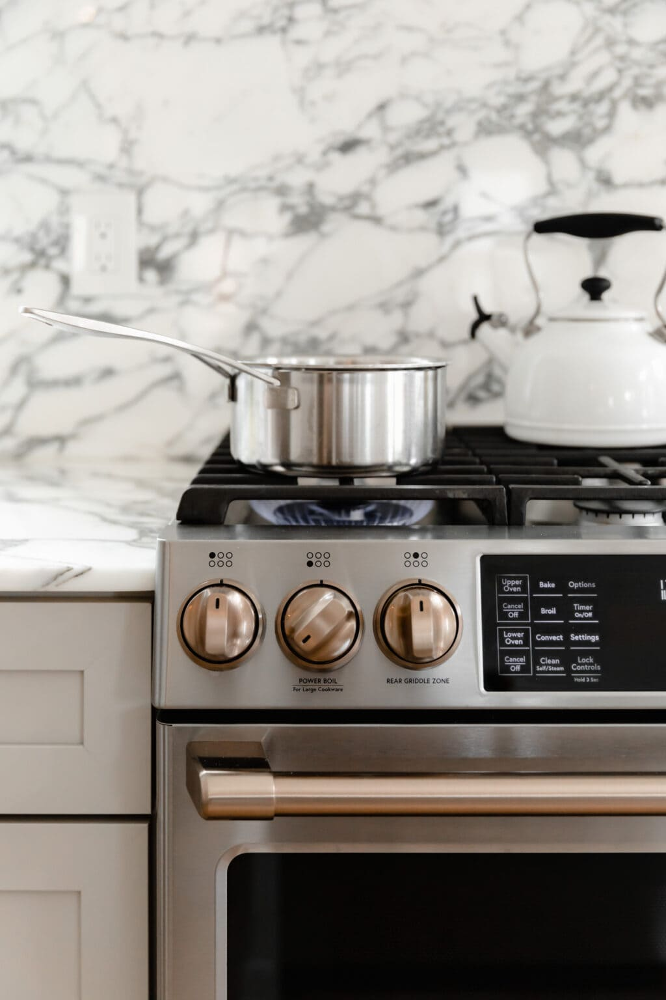
5. Warm the Egg Whites
In your stand mixer bowl, combine the egg whites and roughly 3 tablespoons of granulated sugar. Place the bowl over the steaming pot (double boiler) and whisk continuously until the sugar is melted and the mixture is white and frothy (about 1 minute).
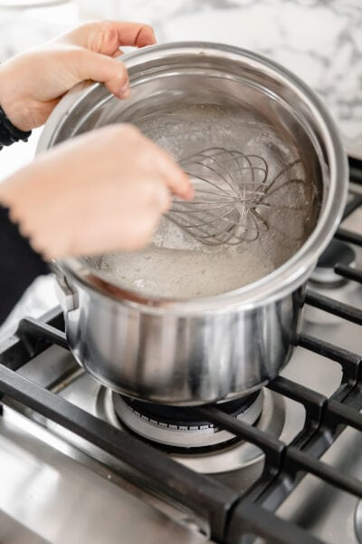
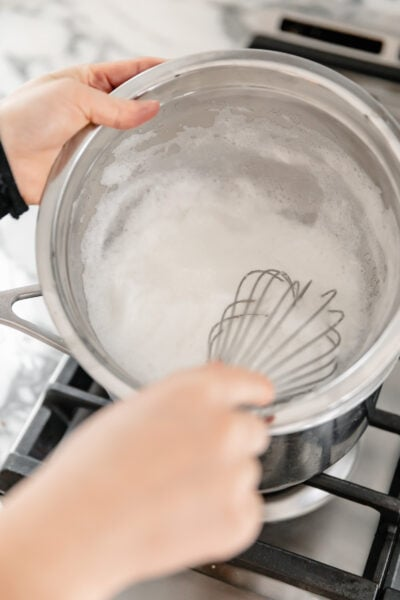
6. Whip to Stiff Peaks
Move the bowl to the stand mixer with the whisk attachment. Whisk on high while slowly adding the remaining granulated sugar and food coloring. Beat 3–4 minutes until glossy and stiff peaks form.
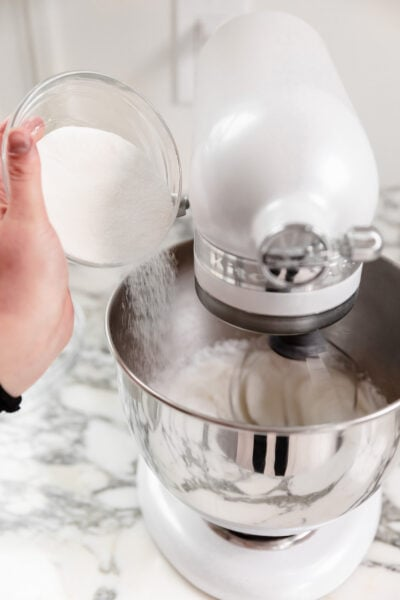
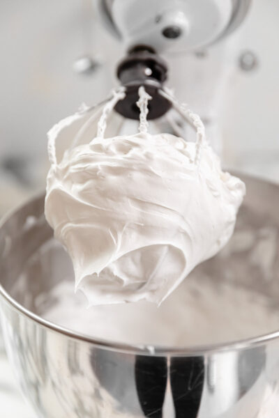
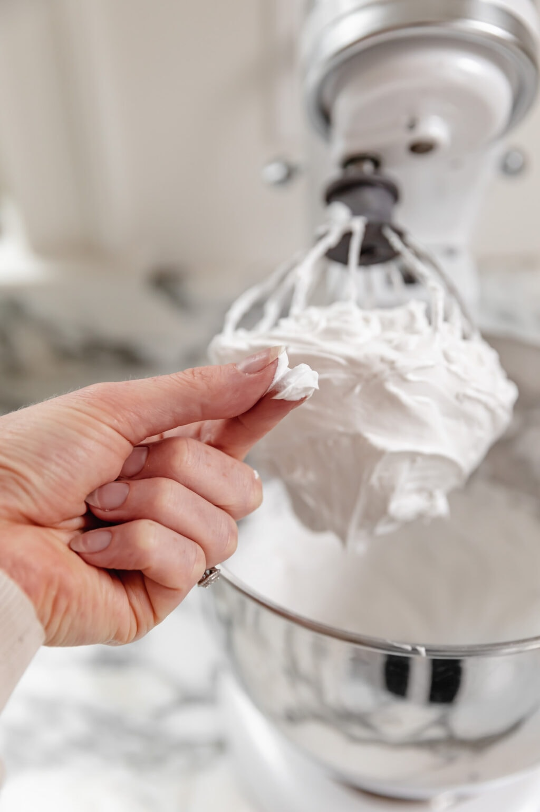
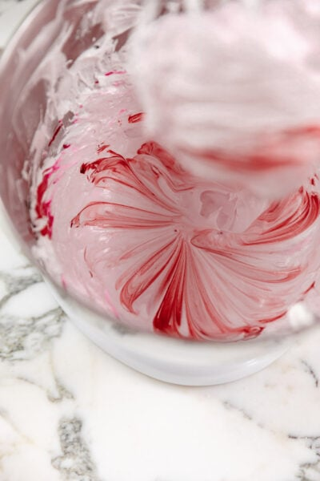
Phase 3: Macaronage
7. Initial Combine
Pour the pre-sifted dry ingredients into the meringue bowl. Turn the mixer to medium for exactly 5 seconds to incorporate, then stop immediately.
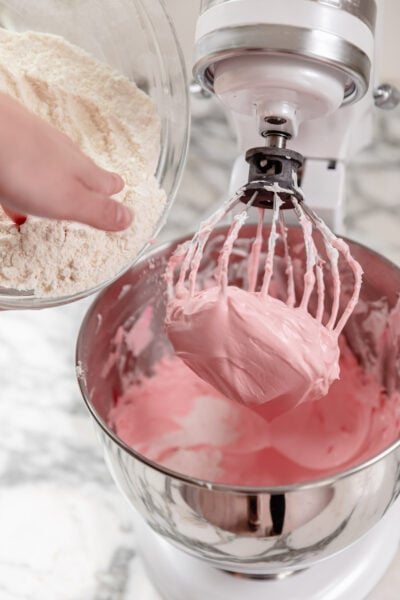
8. Fold with Spatula
Switch to a rubber spatula. Scrape the bowl and fold by hand in a circular motion (scoop outside, twist into center). Stop when the batter reaches a "slow-moving lava" consistency. You should be able to draw a figure-8 with the batter dripping off the spatula without the stream breaking.
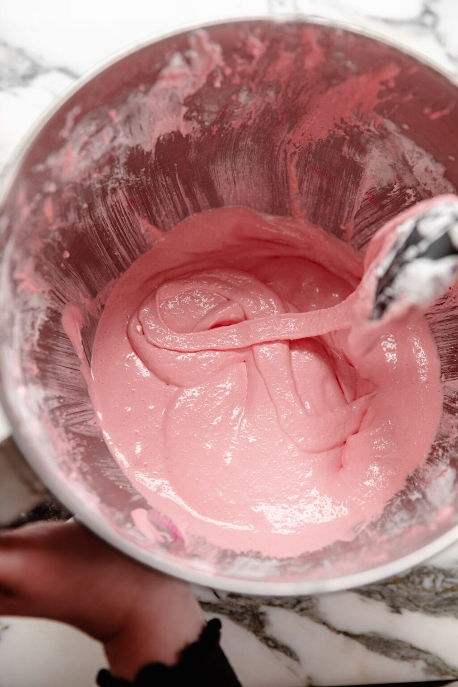
Phase 4: Piping & Baking
9. Pipe, Release Air & Rest
Transfer the batter to a pastry bag with a ½ inch (or 1 inch) tip. Pipe 1-inch circles onto the prepared sheets, 1.5 inches apart. Bang the sheets firmly on the counter twice to pop air bubbles. Let sit at room temperature 15–30 minutes until dry to the touch (prevents cracking).
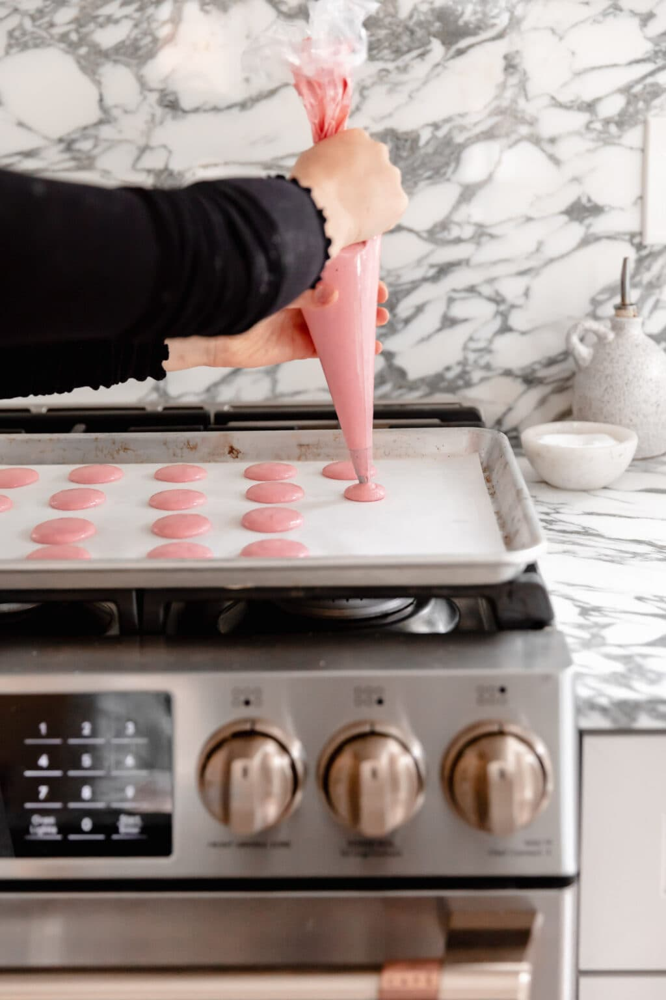
10. Bake
Bake 13–15 minutes, rotating the pan halfway through.
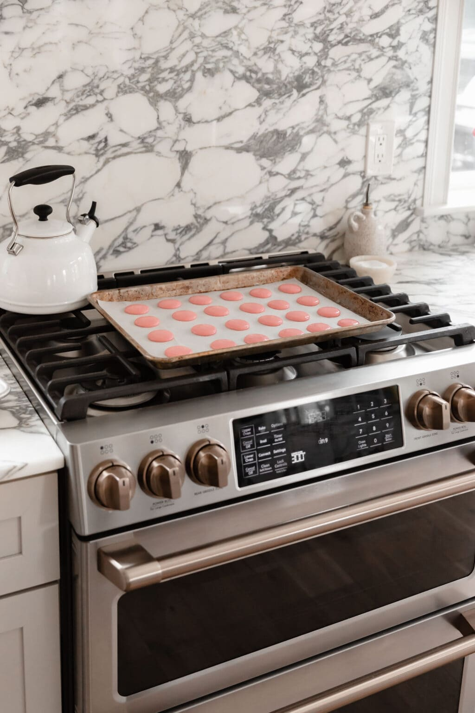
Phase 5: Filling & Assembly
11. Cool
Let the shells cool completely on the baking sheet before removing.
12. Make Filling
While they cool, beat butter, powdered sugar, milk, vanilla, and salt until fluffy (about 2 minutes).
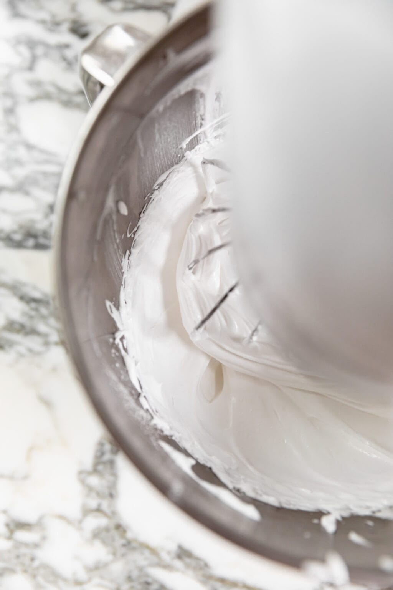
13. Sandwich
Pipe a dollop of filling onto the flat side of one shell and press a second shell on top.
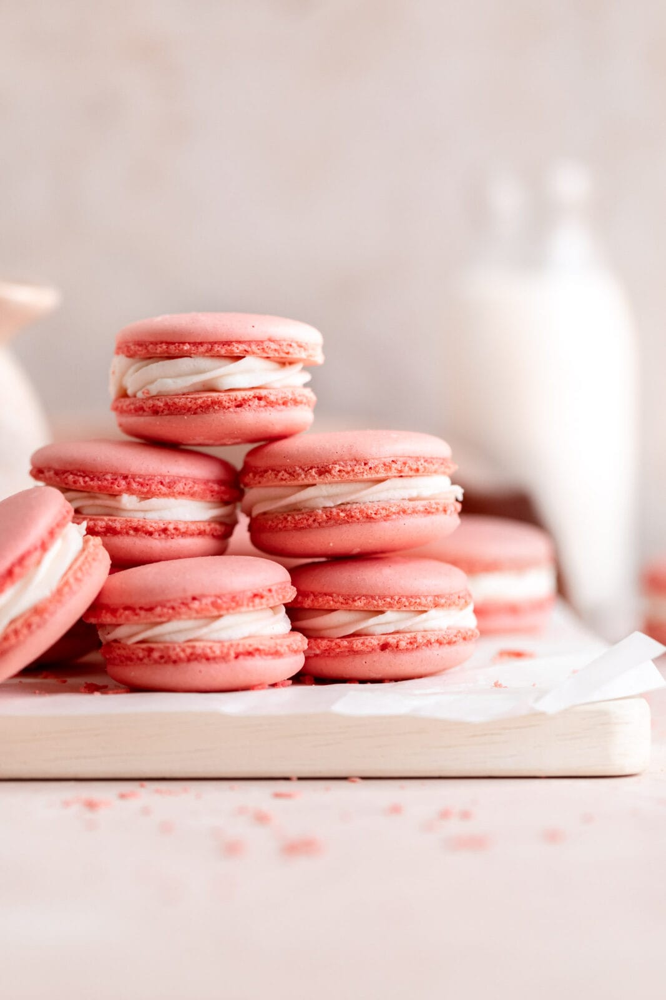
14. Mature & Eat
You can eat them right away, but macarons improve in texture if "matured" in the fridge overnight.
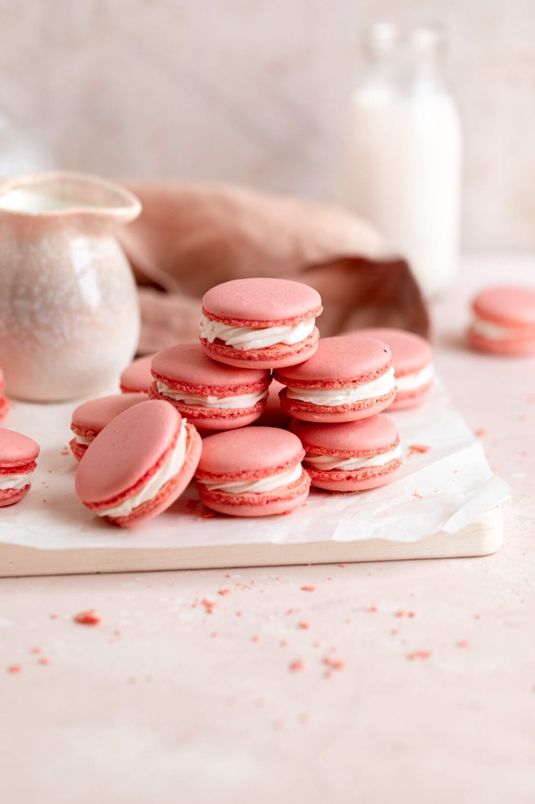